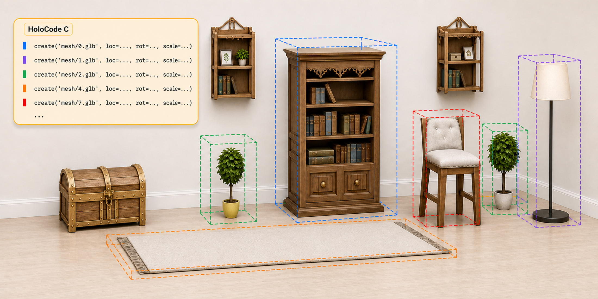
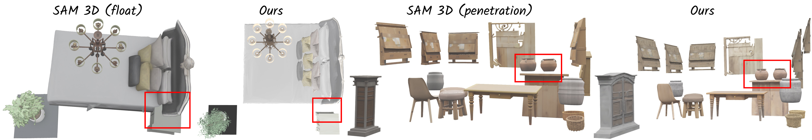
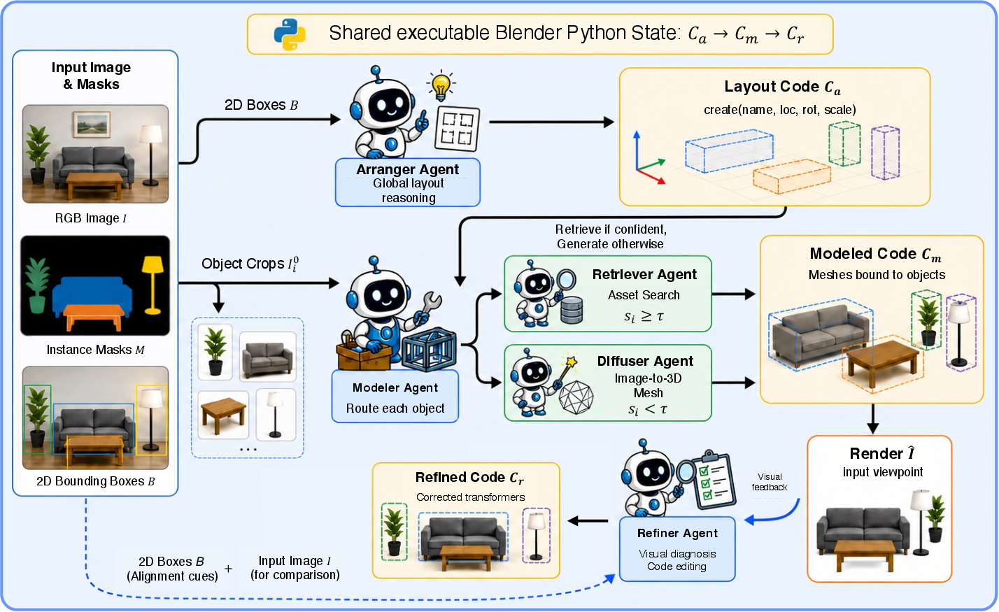
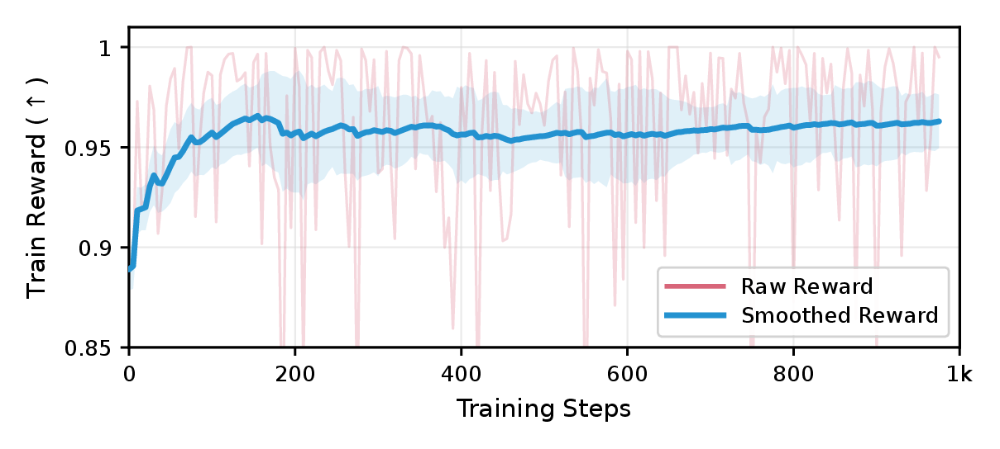
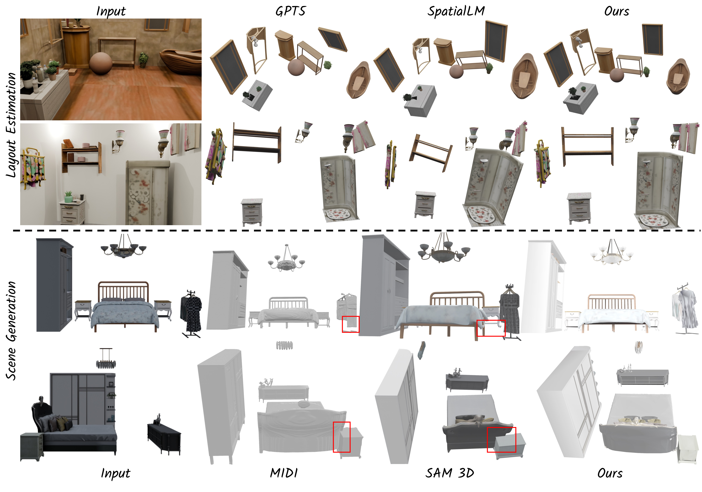
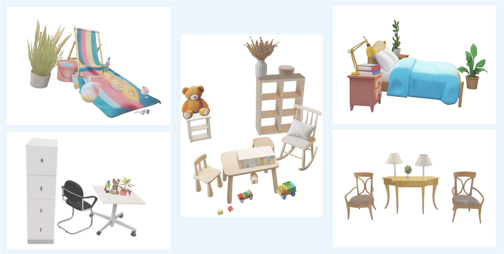
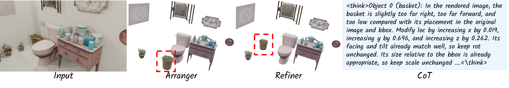
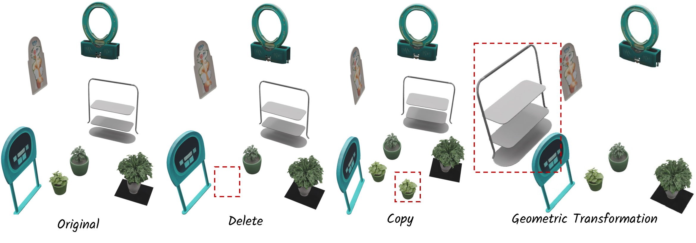

A
Arranger
Predicts object-level Blender Python layout code from the image and ordered 2D boxes.
HoloCode turns a single RGB image into an editable Blender scene by predicting executable layout code, binding visible objects to 3D geometry, and refining the result from rendered feedback.

create command imports a mesh asset and sets editable 3D transforms.
Image-to-3D scene generation must recover both object geometry and plausible spatial relations. Common object-wise pipelines generate each object separately and then assemble the results, which can preserve local details but often leads to floating objects, interpenetrations, missing contacts, or implausible relative scales. HoloCode is a code-centric multi-agent framework that predicts executable Blender Python layout code from a single image and 2D localization cues. An Arranger Agent estimates object identities and 3D transforms, a Modeler Agent binds each object to retrieved or generated geometry, and a Refiner Agent renders the scene and edits the code from visual feedback. The code representation exposes object names, positions, rotations, and scales, making generated scenes interpretable and directly editable.
Object-wise image-to-3D generation can produce plausible isolated meshes, but scene generation also requires support, contact, depth ordering, scale, and orientation to agree across all objects. HoloCode recovers these scene variables explicitly before binding detailed meshes.

HoloCode uses one executable scene representation across three stages. The Arranger predicts a layout script, the Modeler preserves that layout while binding meshes, and the Refiner renders the current scene and edits the code to fix residual visual-spatial errors.

Predicts object-level Blender Python layout code from the image and ordered 2D boxes.
Routes each object to asset retrieval or image-to-3D diffusion, while preserving the predicted transform.
Compares the input view with a render and edits locations, rotations, scales, and support relations in code.
create(name="0.glb", loc=(0.42, -1.35, 0.48),
rot=(0.0, 0.0, -0.71), scale=(0.82, 0.80, 0.96))
create(name="1.glb", loc=(0.05, -1.10, 0.76),
rot=(0.0, 0.0, 0.02), scale=(1.44, 0.82, 0.74))This gallery contains only HoloCode outputs. The meshes are simplified for web interaction; the full-resolution assets are kept offline.
HoloCode builds Blender Python code datasets from SAGE and 3D-FRONT annotations. Supervised fine-tuning teaches valid code generation, while GRPO rewards executable syntax and spatial alignment through mean 3D IoU and thresholded object accuracy.
Rewards scripts whose create calls can be parsed and executed by the restricted evaluator.
Scores oriented 3D boxes derived from loc, rot, and scale.
Supervises code repair from imperfect scripts and rendered views, aligning visual mismatches with code edits.

Experiments evaluate both 3D layout estimation and complete image-to-3D scene generation. HoloCode improves spatial plausibility while preserving object-level fidelity, especially in scenes where independent object assembly struggles with global consistency.



Because every object remains a line of executable code, downstream edits can be localized: deleting, copying, moving, rotating, or resizing a target object does not require regenerating the whole scene.
